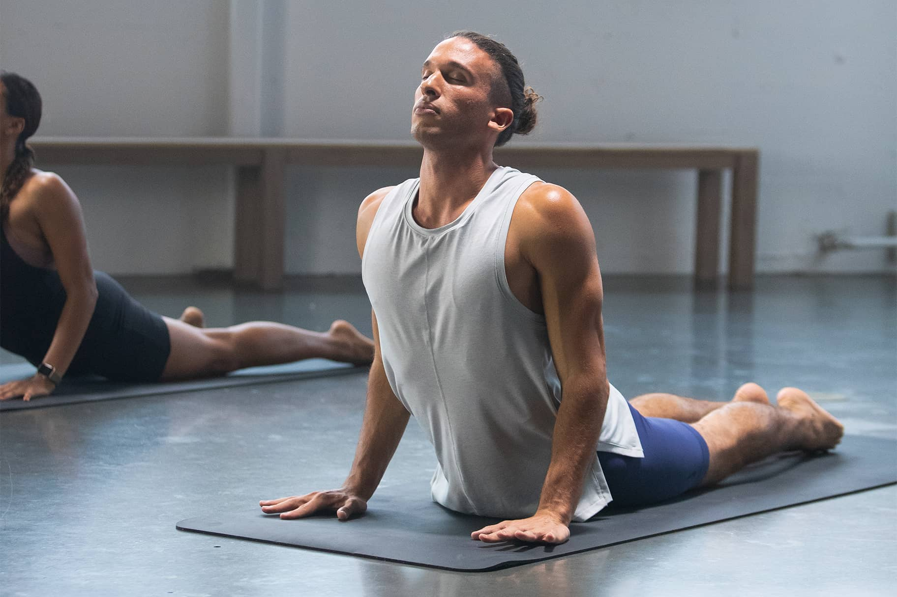
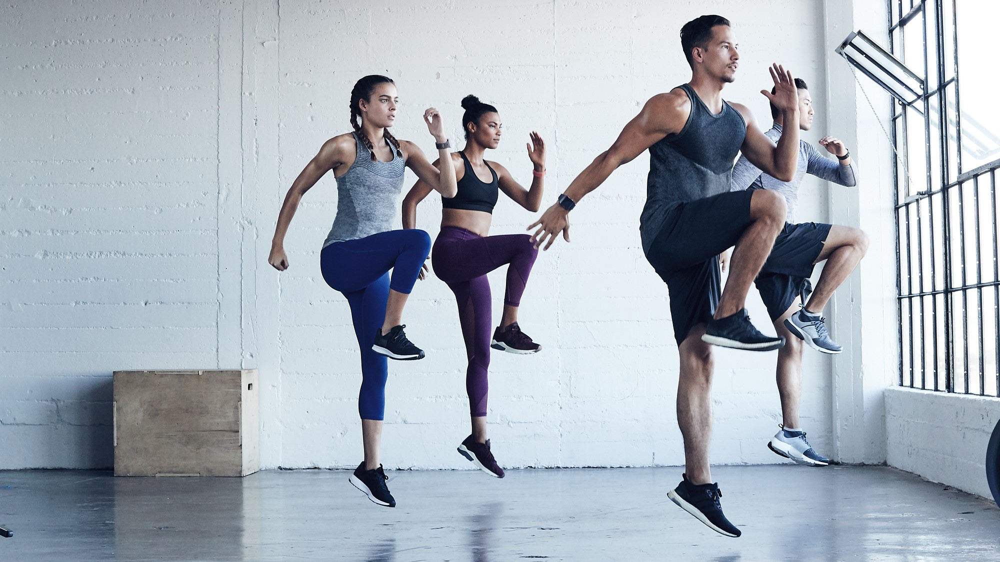
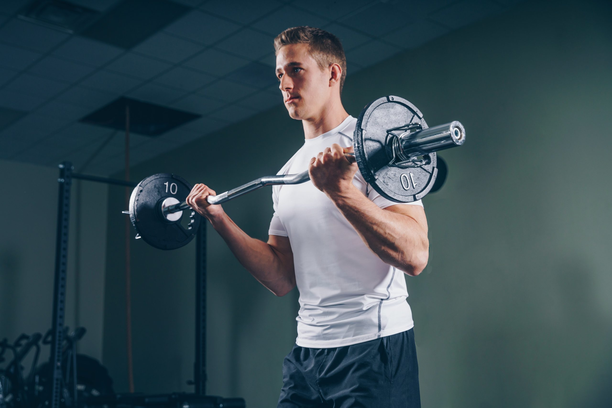
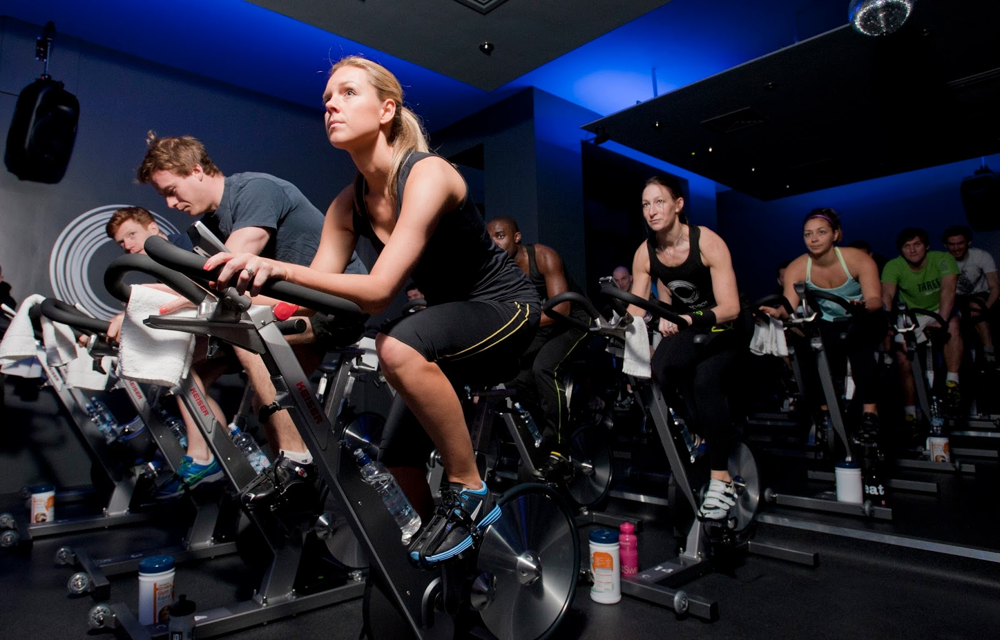

🧘 Yoga
Nos cours de Yoga sont conçus pour améliorer votre bien-être physique et mental. Que vous soyez débutant ou pratiquant avancé, nos instructeurs expérimentés vous guideront à travers une série de postures, d'exercices de respiration et de techniques de pleine conscience.
Avantages : Le Yoga améliore la flexibilité, la force et la clarté mentale. C'est un excellent moyen de réduire le stress et d'atteindre la paix intérieure.
Nombre de séries et répétitions : Cela varie en fonction du type de yoga. En général, vous maintiendrez chaque posture pendant 30 secondes à 1 minute. Les exercices de respiration sont effectués en séries de 5 à 10 respirations.
Instructeurs : Animé par Fatima Abbes.
Disponibilité : Tous les lundis et mercredis à 18h00.
Durée : 1 heure
À apporter : Portez des vêtements confortables et apportez un tapis de yoga (nous fournissons des tapis si nécessaire).
💪 HIIT (Entraînement par intervalles à haute intensité)
Le HIIT est un entraînement rapide et intense qui repousse vos limites et brûle des calories à un rythme accéléré. L'entraînement consiste en de courtes séries d'exercices intenses suivis de courtes périodes de repos. Ce cours est parfait pour ceux qui veulent se mettre au défi et obtenir des résultats rapides.
Avantages : Le HIIT est connu pour stimuler le métabolisme, améliorer la santé cardiovasculaire et augmenter l'endurance. C'est un moyen efficace de brûler les graisses et de développer la masse musculaire maigre.
Nombre de séries et répétitions : En général, 4 à 5 séries de 30 secondes d'exercice intense suivies de 30 secondes de repos.
Instructeurs : Animé par Tarek Bouraoui.
Disponibilité : Tous les mardis et jeudis à 17h30.
Durée : 30 minutes
À apporter : Portez des vêtements de sport et des chaussures de soutien. Apportez une serviette et une bouteille d'eau pour l'hydratation.
🏋️ Musculation
Le cours de Musculation est conçu pour vous aider à développer votre force, votre masse musculaire et votre force générale. Que vous soyez débutant ou expérimenté, nos entraîneurs vous aideront à améliorer votre forme et votre technique tout en ciblant des groupes musculaires spécifiques.
Avantages : La musculation augmente la masse musculaire, stimule le métabolisme et améliore la densité osseuse. C'est un excellent moyen de sculpter et tonifier votre corps.
Nombre de séries et répétitions : 3 à 4 séries de 8 à 12 répétitions pour chaque groupe musculaire (ajusté en fonction des objectifs de fitness).
Instructeurs : Animé par Laila Saidane.
Disponibilité : Tous les lundis, mercredis et vendredis à 7h00 et 18h00.
Durée : 1 heure
À apporter : Portez des vêtements de sport confortables et des chaussures solides. Nous fournissons des poids, mais n'hésitez pas à apporter vos propres gants si vous le souhaitez.
🚴♂️ Cyclisme
Nos cours de cyclisme en salle sont un moyen amusant de booster votre santé cardiovasculaire tout en vous divertissant. Rejoignez-nous pour une séance énergique, accompagnée de musique motivante, dirigée par un instructeur expert. Que vous visiez la perte de poids, une meilleure endurance ou un entraînement cardio amusant, notre cours de cyclisme est fait pour vous.
Avantages : Le cyclisme est excellent pour améliorer l'endurance cardiovasculaire, tonifier les jambes et brûler des graisses. C'est un entraînement à faible impact adapté à tous les niveaux de forme physique.
Nombre de séries et répétitions : 3 à 5 séries de 10 à 15 minutes de cyclisme avec une intensité variable, en mettant l'accent sur l'endurance et la vitesse.
Instructeurs : Animé par Asma Sliti.
Disponibilité : Tous les mardis et jeudis à 6h30 et 19h00.
Durée : 45 minutes
À apporter : Portez des vêtements de sport confortables et des chaussures de cyclisme (nous fournissons des chaussures si nécessaire). Apportez une serviette et une bouteille d'eau.